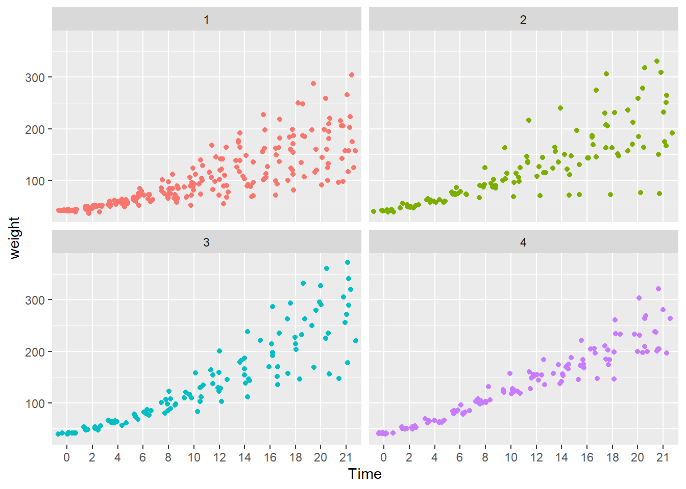
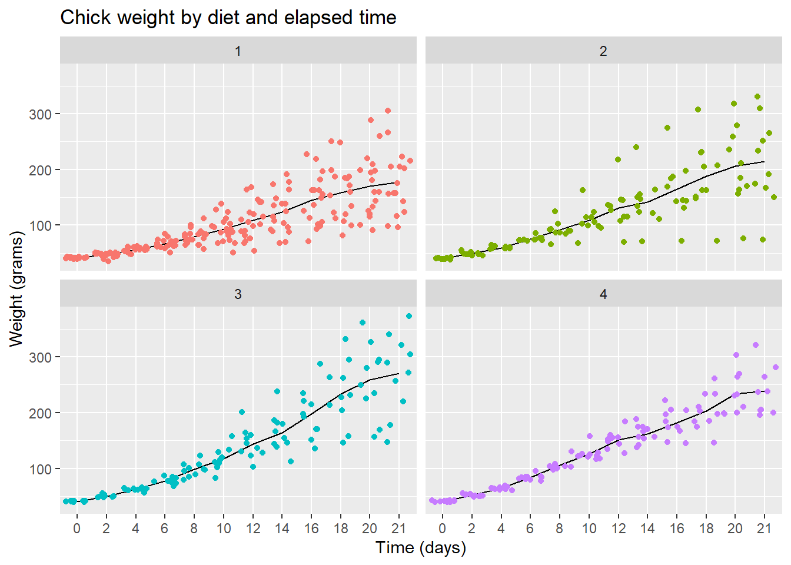
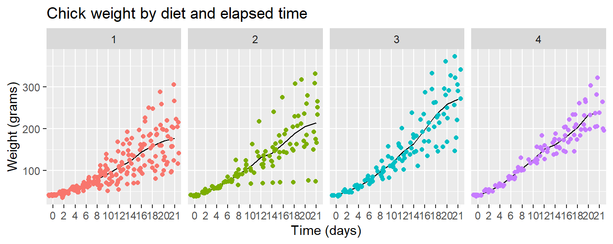

# R chart basics
# your name
# date R chart basics
Using ggplot2 to create charts in R.
License. This material is adapted from Getting started in R: Tinyverse edition by Bashir and Eddelbuettel (2018) which was licensed under CC BY-SA by ilustat. This adaptation and extension, R chart basics by Richard Layton, is licensed under CC BY-SA 2.0.
Preface
The rationale for using the ggplot2 package instead of other R graphics environments (e.g., lattice, base R, or grid graphics) is nicely summarized by Zumel and Mount—it “excels at combining multiple graphical elements together” even though “its syntax can take some getting used to” (Zumel & Mount, 2020, p. 60). They raise three key points:
- Graphs in ggplot2 are defined only on data frames. The variables from the data frame—assigned to the x-axis, the y-axis, or to the color or size of a data marker—are called aesthetics, declared using the
aes()function. - The
ggplot()function declares the graph object; its arguments can include the data frame of interest and the aesthetics. Theggplot()function doesn’t itself produce a visualization; visualizations are produced by layers. - Layers produce the plots and plot transformations and are added to a graph object using the
+operator. Each layer can also take a data frame and aesthetics as arguments, in addition to layer-specific parameters. Example of layers aregeom_point()for a scatterplot andgeom_line()for a line plot.
Before starting. Our tutorials assume that you
- Have completed the Before you arrive instructions
- Have completed the R basics guide
- Start your R session by launching the RStudio project you created, e.g.,
midfield-institute-2024.Rproj
If you are in an RStudio project, the project name appears in the upper left corner of the RStudio window. Your project directory (folder) should look something like this:
midfield-institute-2024\
data\
results\
scripts\
midfield-institute-2024.RprojGetting started
Start a new script. I recommend that you start a new script for this segment.
- Use File > New File > R Script to create a new R script
- File > Save As… to name the file (we suggest
02-chart-basics.R), then save it to thescriptsdirectory - At the top of the script, add a minimal header, something like:
- Use
library()to load packages used in the script.
# silently load packages
suppressPackageStartupMessages(library("ggplot2"))
suppressPackageStartupMessages(library("data.table"))
# set data.table printout options
options(
datatable.print.nrows = 20,
datatable.print.topn = 5,
datatable.print.class = TRUE
)Reminder: In a code chunk like the one above, you can click on the Copy to Clipboard icon  in the upper right corner to enable quick copy and paste from this document to your script.
in the upper right corner to enable quick copy and paste from this document to your script.
Use your script throughout the tutorial. When a new chunk of code is given,
- Copy the line(s) of code into your script, save, and run.
- Check your result by comparing it to the result in the tutorial.
- Check what you’ve learned using the Your turn exercises.
Data
Introduction. R comes with many datasets installed. We’ll use the ChickWeight data set to cover some basic data manipulation to prepare the data for graphing.
The help page for ChickWeight summarizes the experiment from which the data were collected,
The body weights of the chicks were measured at birth and every second day thereafter until day 20. They were also measured on day 21. There were four groups of chicks on different protein diets.”
You can view the help page by running,
help("ChickWeight")There are 578 observations (rows) and 4 variables (columns). Recall that names are case-sensitive—weight is lowercase, the other variables are capitalized.
Chick: unique ID for each chick.Diet: one of four protein diets.Time: number of days since birth.weight: body weight of chick in grams.
The goal of graphing the data is to investigate the effect of diet on weight over time.
Download and save a CSV file. We use the data.table fread() function to read the data set from the workshop repository (an Internet connection is required).
We use fwrite() to save the file to the data directory in your project folder.
# data URL
data_url <- "https://raw.githubusercontent.com/MIDFIELDR/2024-midfield-institute/main/data/chick_weight.csv"
# download the data
chick_weight <- fread(data_url)
# write the data to your data directory
fwrite(chick_weight, "data/chick_weight.csv")These lines of code are run only once. After the data are downloaded, these lines can be commented out, e.g.,
# # data URL
# data_url <- "https://raw.githubusercontent.com/MIDFIELDR/2024-midfield-institute/main/data/chick_weight.csv"
#
# # download the data
# chick_weight <- fread(data_url)
#
# # write the data to your data directory
# fwrite(chick_weight, "data/chick_weight.csv")Import a CSV file. We import the data from the local file chick_weight.csv using fread(). This function returns a data.table object. A data.table is a data.frame with additional attributes.
cw <- fread("data/chick_weight.csv")Look at the data. To look at the data, type the object (dataset) name:
# view the data
cw
#> Chick Diet Time weight
#> <int> <int> <int> <int>
#> 1: 18 1 0 39
#> 2: 18 1 2 35
#> 3: 16 1 0 41
#> 4: 16 1 2 45
#> 5: 16 1 4 49
#> ---
#> 574: 48 4 14 170
#> 575: 48 4 16 222
#> 576: 48 4 18 261
#> 577: 48 4 20 303
#> 578: 48 4 21 322Several base R functions help us inspect the data. In addition to str() that you used in the previous tutorial, we also have:
summary()provides a summaryhead()andtail()display the beginning and end of the data set
summary(cw)
#> Chick Diet Time weight
#> Min. : 1.00 Min. :1.000 Min. : 0.00 Min. : 35.0
#> 1st Qu.:13.00 1st Qu.:1.000 1st Qu.: 4.00 1st Qu.: 63.0
#> Median :26.00 Median :2.000 Median :10.00 Median :103.0
#> Mean :25.75 Mean :2.235 Mean :10.72 Mean :121.8
#> 3rd Qu.:38.00 3rd Qu.:3.000 3rd Qu.:16.00 3rd Qu.:163.8
#> Max. :50.00 Max. :4.000 Max. :21.00 Max. :373.0Use tail() to examine the last observations in cw and compare to the last observations in the ChickWeight data set provided in base R. Do they agree? Describe the differences, if any.
The variables (columns) are the same but in different order. The observations (rows) are apparently in different order too.
#> Chick Diet Time weight
#> <int> <int> <int> <int>
#> 1: 48 4 12 154
#> 2: 48 4 14 170
#> 3: 48 4 16 222
#> 4: 48 4 18 261
#> 5: 48 4 20 303
#> 6: 48 4 21 322
#> weight Time Chick Diet
#> 573 155 12 50 4
#> 574 175 14 50 4
#> 575 205 16 50 4
#> 576 234 18 50 4
#> 577 264 20 50 4
#> 578 264 21 50 4Also, the row numbers in cw (a data.table) are different from the row numbers in ChickWeight.
Use str() to compare cw to the original ChickWeight in base R. How are they different?
cw is a data.frame and a data.table object and the variables are all integers.
#> Classes 'data.table' and 'data.frame': 578 obs. of 4 variables:
#> $ Chick : int 18 18 16 16 16 16 16 16 16 15 ...
#> $ Diet : int 1 1 1 1 1 1 1 1 1 1 ...
#> $ Time : int 0 2 0 2 4 6 8 10 12 0 ...
#> $ weight: int 39 35 41 45 49 51 57 51 54 41 ...
#> - attr(*, ".internal.selfref")=<externalptr>ChickWeight is a data.frame and a groupedData object (a type of ordered grouping). Two columns are integers but two are factors. We’ll discuss factors in due course.
#> Classes 'nfnGroupedData', 'nfGroupedData', 'groupedData' and 'data.frame': 578 obs. of 4 variables:
#> $ weight: num 42 51 59 64 76 93 106 125 149 171 ...
#> $ Time : num 0 2 4 6 8 10 12 14 16 18 ...
#> $ Chick : Ord.factor w/ 50 levels "18"<"16"<"15"<..: 15 15 15 15 15 15 15 15 15 15 ...
#> $ Diet : Factor w/ 4 levels "1","2","3","4": 1 1 1 1 1 1 1 1 1 1 ...
#> - attr(*, "formula")=Class 'formula' language weight ~ Time | Chick
#> .. ..- attr(*, ".Environment")=<environment: R_EmptyEnv>
#> - attr(*, "outer")=Class 'formula' language ~Diet
#> .. ..- attr(*, ".Environment")=<environment: R_EmptyEnv>
#> - attr(*, "labels")=List of 2
#> ..$ x: chr "Time"
#> ..$ y: chr "Body weight"
#> - attr(*, "units")=List of 2
#> ..$ x: chr "(days)"
#> ..$ y: chr "(gm)"Scatterplot
Our goal is to examine how weight changes over time conditioned by diet.
Don’t worry too much about the details of the ggplot2 syntax. To learn more, try different things even if you get an error message. No harm is done!
First plot. Let’s plot the weight data (y axis) as a function of time (x axis). The first plot is empty because there is no “geom” (a geometric layer) to encode the data visually.
ggplot(data = cw, mapping = aes(x = Time, y = weight))Next we add the geom_point() layer to encode the data as points in a scatterplot.
ggplot(data = cw, mapping = aes(x = Time, y = weight)) +
geom_point()- Switch the variables
Timeandweightin the code chunk. - What do you think of this new plot compared to the original?
In a time series, the visual convention (in Latin/Roman-descended societies) is for time to read from left to right, so this chart is not as intuitive as the earlier chart.
Location of +. The + symbol that adds a layer to a ggplot2 object cannot start a new line. Using the code above to illustrate,
# correct
ggplot(cw, aes(weight, Time)) + geom_point()
# correct
ggplot(cw, aes(weight, Time)) +
geom_point()
# incorrect
ggplot(cw, aes(weight, Time))
+ geom_point()Another variable
Color encodes a third variable. The graph does not differentiate between the diets. In the next step, we use color to encode Diet, a categorical variable with four levels: diets 1, 2, 3, and 4. One important thing to notice is that all arguments being “mapped” must be names of variables in the cw data frame.
ggplot(data = cw, mapping = aes(x = Time, y = weight, color = factor(Diet))) +
geom_point()It is difficult to conclude anything from this graph as the points are printed on top of one another (with diet 4 overprinting diet 3 which overprints diet 2, etc.).
Faceted chart
Factor variables. Before we continue, we make an important change to the cw dataset by transforming Diet and Time into factor variables. Factors are treated by R as categorical variables instead of continuous variables. It will simplify our coding.
The := operator (from data.table) alters variables “in-place”, with no explicit assignment (<-). We revisit the := operator in the R data basics tutorial.
# create factors
cw[, Diet := factor(Diet)]
cw[, Time := factor(Time)]
# notice the difference?
summary(cw)
#> Chick Diet Time weight
#> Min. : 1.00 1:220 0 : 50 Min. : 35.0
#> 1st Qu.:13.00 2:120 2 : 50 1st Qu.: 63.0
#> Median :26.00 3:120 4 : 49 Median :103.0
#> Mean :25.75 4:118 6 : 49 Mean :121.8
#> 3rd Qu.:38.00 8 : 49 3rd Qu.:163.8
#> Max. :50.00 10 : 49 Max. :373.0
#> (Other):282facet_wrap() function. facet_wrap() is a ggplot2 function that plots variables in separate facets, or panels. In this case, each facet contains one of the four diets.
# create facets by Diet
ggplot(data = cw, mapping = aes(x = Time, y = weight, color = Diet)) +
geom_point() +
facet_wrap(vars(Diet)) +
theme(legend.position = "bottom")- To address “overprinting” (where points print over other points in the same position), replace
geom_point()withgeom_jitter(). - What observations about the data can you make?
- Jittering allows a much better view of the full data set.
- Diet 4 has the least variability.
- Diet 3 seems to have the highest weights.
- We can’t really say anything about the mean effect of each diet.
For the legend.position argument, try using “top”, “left” and “none”. Do we really need a legend for this plot?

Here, the legend.position argument is “none”. The diet types are in the panel headers, so a legend is unnecessary.
Mean line chart
Next we plot the mean changes over time for each diet using the stat_summary() function. Because we do not have facets this time, we use the default legend.
ggplot(data = cw, mapping = aes(x = Time, y = weight, group = Diet, color = Diet)) +
stat_summary(fun = "mean", geom = "line")We see that diet 3 has the highest mean weight gain by the end of the experiment but we don’t have any information about the variation (uncertainty) in the data.
- What happens when you add
geom_point()to the plot above? Don’t forget the+. - Does it make a difference if you put it before or after
stat_summary(...)? - Hint: Look carefully at how the graph is plotted.
- The chart is the same either way.
- The underlying idea in ggplot2 is that a chart is assembled in layers, adding a new layer to previous layers using the
+operator.
Box & whisker plot
To see variation between the different diets we use geom_boxplot() to plot a box & whisker plot. A note of caution—the number of chicks per diet is relatively low to produce this plot.
ggplot(data = cw, mapping = aes(x = Time, y = weight, color = Diet)) +
facet_wrap(vars(Diet)) +
geom_boxplot() +
theme(legend.position = "none") +
ggtitle("Changing distributions of chick weight by diet and elapsed time")- Diet 3 seems to have the highest “average” weight gain
- Diet 4 seems to have the least amount of variation
To the plot above, edit the axis labels using xlab() for the x-axis label and ylab() for the y-axis label. The labels should be,
- x-axis: “Time (days)”
- y-axis: “Weight (grams)”
Hint: Add a plus symbol (+) at the end of the current last line, then add a the x-label layer using the xlab() function. Repeat for the y-label. You can type help(xlab) in the Console to view its help page.
Scatterplot with mean line
Let’s finish with a plot that you might include in a publication
ggplot(data = cw, mapping = aes(x = Time, y = weight, group = Diet, color = Diet)) +
facet_wrap(vars(Diet)) +
stat_summary(fun = "mean", geom = "line", colour= "black") +
geom_jitter() +
theme(legend.position = "none") +
ggtitle("Chick weight by diet and elapsed time") +
xlab("Time (days)") +
ylab("Weight (grams)")
Note that I printed the line layer first then printed the points over them to let the data be prominent.
- Read the help page for the
facet_wrap()function - See if you can edit the code slightly to make the facets print out row-wise, as in 1 row and 4 columns of charts.
- What visual advantages does this arrangement provide?
- What visual disadvantages?

References
Bashir, S., & Eddelbuettel, D. (2018). Getting started in R: Tinyverse edition. https://eddelbuettel.github.io/gsir-te/Getting-Started-in-R.pdf
Dowle, M., & Srinivasan, A. (2021). Data.table: Extension of ‘data.frame‘. https://CRAN.R-project.org/package=data.table
Wickham, H. (2016). ggplot2: Elegant graphics for data analysis. Springer-Verlag New York. https://ggplot2.tidyverse.org
Zumel, N., & Mount, J. (2020). Practical Data Science with R (2nd ed.). Manning Publications Co.